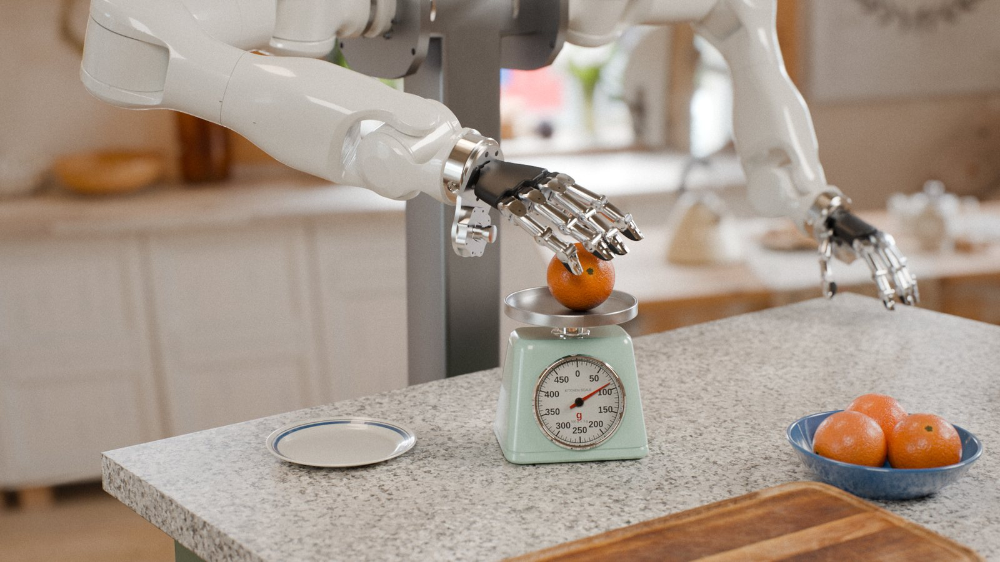

dashboard · all 50 tasks: trials and success rate · this task in the gallery · generated 2026-11-26 10:54 EST by python s2/s2loop/daily50_trials_page.py

Weigh the orange on the kitchen scale.
the instruction S2 was given, read from the trial record (instruction)
FLAGGED best of 5 trial(s); 0 passed. First attempt (trial 40): FLAGGED. Not passed in any attempt so far. Played by session agents, probe series — not a counted test series.
written 2026-11-26 10:09 · attempt 5 · played after reading this task's notes · episode index 127 · 3 turns (1 plan, 1 act, 1 replan) · 784 ticks of 1500 used by the turns · run 20261126T145919Z-c046153a · session daily50_t49-81371169
The record holds no new steps.
| turn | phase | skill | what S2 said it does and why | reply | ticks |
|---|---|---|---|---|---|
| 1 | PLAN | get_task_context + | measure the orange part and the pan, ask synthesized grasps with the trained disc donor at the ball's middle, sweep check_plan, keep the first accepted plan (attach, carry in one arch, guarded line into the pan, detach, reach back) | ok | at 0no motion |
| 2 | ACT | commit_plan + | commit the checked plan (attach with the synthesized disc-donor grasp at the ball's middle, carry in one arch, guarded line into the pan, detach, reach back to the start pose), plan steps 1 to 4 | not okgrasp_slip | 0–78415.7 s |
| 3 | REPLAN | get_task_context + | the orange left the hand in the carry and lies on the table by the scale's foot; measure it there, ask the bound clip's grasps, sweep check_plan for one shorter cycle that fits the ticks leftreason: the orange left the hand in the carry and lies on the table by the scale's foot; measure it there, ask the bound clip's grasps, sweep check_plan for one shorter cycle that fits the ticks left | ok | at 784no motion |
Ticks: the tick range the turn moved the robot over (one tick is 20 ms). ▶ m:ss under a turn number is where that turn starts in the video; click a row to go there.
| skill | ok | the skill's own verification (head camera, joint and servo effort) | what the record showed afterwards |
|---|---|---|---|
| commit_plan | not ok | — |
written 2026-11-26 08:29 · attempt 4 · played after reading this task's notes · episode index 122 · 3 turns (2 plan, 1 act) · 801 ticks of 1500 used by the turns · run 20261126T132029Z-dcc27a44 · session daily50_t49-bd61af64
No replan in this trial.
| turn | phase | skill | what S2 said it does and why | reply | ticks |
|---|---|---|---|---|---|
| 1 | PLAN | propose_grasps x3 + | measure the orange part and the pan, ask grasps (sph60 recorded first, then plain, then synthesized with a dwell), sweep whole plans through check_plan, write the plan | ok | at 0no motion |
| 2 | PLAN | propose_grasps x2 + | read why the recorded ball pick is not offered, ask the synthesized ball grasp with a longer wait at the grasp pose, sweep the end height of the guarded leg into the pan | ok | at 0no motion |
| 3 | ACT | commit_plan + | commit the checked plan (attach with the synthesized ball grasp and 1 s at the grasp pose, carry in one arch, guarded line into the pan, detach, reach back to the start pose), plan steps 1 to 4 | not okgrasp_slip | 0–80116.0 s |
Ticks: the tick range the turn moved the robot over (one tick is 20 ms). ▶ m:ss under a turn number is where that turn starts in the video; click a row to go there.
| skill | ok | the skill's own verification (head camera, joint and servo effort) | what the record showed afterwards |
|---|---|---|---|
| commit_plan | not ok | passed false | — |
written 2026-11-26 06:45 · attempt 3 · played after reading this task's notes · episode index 116 · 5 turns (1 plan, 2 look, 1 act, 1 replan) · 702 ticks of 1500 used by the turns · run 20261126T113724Z-0b79c585 · session daily50_t49-bb65e5f1
| turn | phase | skill | what S2 said it does and why | reply | ticks |
|---|---|---|---|---|---|
| 1 | LOOK | propose_grasps x5 | list the things, measure the orange's part against its own top points and the pan, ask the offered policy grasps (nothing bound, nothing moves) | ok | at 0no motion |
| 2 | LOOK | — | read back the rest of the same measurement (the reply cut the result after 16 keys): pan and the offered grasps | ok | at 0no motion |
| 3 | PLAN | attach x4 + | no recorded grasp is followable (no_grasp for disc60h7, also with sph60 named); take the synthesized grasp of the orange's own part with the 60 mm ball class (hand on the robot's side), sweep the end height over the pan through check_ | ok | at 0no motion |
| 4 | ACT | commit_plan | commit the checked plan (attach with the synthesized 60 mm ball grasp, carry up and level to the pan middle, lower to 8 mm above the pan floor, detach, reach back to the start pose with the hand open), plan steps 1 to 4 | not okgrasp_slip | 0–70214.0 s |
| 5 | REPLAN | propose_grasps x3 + | the orange left the hand 1.2 s into the carry and lies on the plate again, 4.5 cm nearer the robot; ask whether a second policy grasp is offered there and check one changed plan (hold s0, lower carry) at zero ticksreason: the grip's load was gone 1.2 s into the carry and the orange fell back onto the plate 4.5 cm from where it lay | ok | at 702no motion |
Ticks: the tick range the turn moved the robot over (one tick is 20 ms). ▶ m:ss under a turn number is where that turn starts in the video; click a row to go there.
| skill | ok | the skill's own verification (head camera, joint and servo effort) | what the record showed afterwards |
|---|---|---|---|
| commit_plan | not ok | passed false | — |
written 2026-11-26 02:12 · attempt 2 · played after reading this task's notes · episode index 111 · 10 turns (4 look, 2 act, 4 replan) · 512 ticks of 1500 used by the turns · run 20261126T070144Z-39dc55d3 · session daily50_t49-51fb4cb3
The record holds no steps.
The record holds no new steps.
The record holds no new steps.
The record holds no new steps.
The record holds no new steps.
| turn | phase | skill | what S2 said it does and why | reply | ticks |
|---|---|---|---|---|---|
| 1 | LOOK | — | measure orange and pan from depth, ask the policy grasps, sweep check_plan over attach-carry-detach candidates (zero ticks) | not okexecution_failed | at 0no motion |
| 2 | LOOK | propose_grasps + | measure orange and pan from depth, ask the policy grasps, sweep check_plan over attach-carry-detach candidates (zero ticks) | ok | at 0no motion |
| 3 | ACT | attach + | commit 1 attach the orange (policy grasp) and lift to hover; look, estimate in hand; commit 2 carry level over the pan, lower to 2.5 cm above rest, detach in place, reach away | not okgrasp_slip | 0–4088.2 s |
| 4 | REPLAN | — | the policy grasp came up empty, the orange still lies on the plate; the mask part's centre was 2 cm off the orange's seen centre: re-measure the orange from depth, ask the grasps on the corrected estimate and commit ONE plan (attachreason: the policy grasp came up empty, the orange still lies on the plate; the mask part's centre was 2 cm off the orange's seen centre: re-measure the orange from depth, ask the grasps on the corrected estimate and commit ONE plan (attach | ok | at 408no motion |
| 5 | REPLAN | localize_object | the first policy grasp came up empty and shoved the orange 3 cm on the plate (its mask part's centre had been 2 cm off); find the orange alone again (words checked against the depth-measured centre), ask its grasps and commit ONE plreason: the first policy grasp came up empty and shoved the orange 3 cm on the plate (its mask part's centre had been 2 cm off); find the orange alone again (words checked against the depth-measured centre), ask its grasps and commit ONE pl | not okexecution_failed | at 408no motion |
| 6 | REPLAN | localize_object x5 + | the first policy grasp came up empty and shoved the orange 3 cm on the plate (its mask part's centre had been 2 cm off); find the orange alone again (words checked against the depth-measured centre), ask its grasps and commit ONE plreason: the first policy grasp came up empty and shoved the orange 3 cm on the plate (its mask part's centre had been 2 cm off); find the orange alone again (words checked against the depth-measured centre), ask its grasps and commit ONE pl | ok | at 408no motion |
| 7 | REPLAN | locate_objects x3 + | the orange is no longer listed as a part of its own; look again (fresh observations) for the orange alone at its depth-measured centre, then ask its grasps and commit ONE plan: attach, carry over the pan, detach in place, reach awayreason: the orange is no longer listed as a part of its own; look again (fresh observations) for the orange alone at its depth-measured centre, then ask its grasps and commit ONE plan: attach, carry over the pan, detach in place, reach away | ok | at 408no motion |
| 8 | LOOK | look | look | ok | at 408no motion |
| 9 | LOOK | propose_grasps x6 | zero-tick probe, which grasps does the plate-and-orange object offer and where are they anchored against the orange's measured centre | ok | at 408no motion |
| 10 | ACT | reach + | open the empty hand and park it beside the plate (the ending pose); from the new picture, only if the orange is listed as a thing of its own again, ONE retry: attach, carry over the pan, detach in place, reach back to the park pose | ok | 408–5122.1 s |
Ticks: the tick range the turn moved the robot over (one tick is 20 ms). ▶ m:ss under a turn number is where that turn starts in the video; click a row to go there.
| skill | ok | the skill's own verification (head camera, joint and servo effort) | what the record showed afterwards |
|---|---|---|---|
| commit_plan | not ok | — | |
| commit_plan | ok | — |
written 2026-11-25 16:34 · attempt 1 · played without this task's notes · episode index 40 · 13 turns (1 plan, 8 look, 1 act, 3 check) · 624 ticks of 1500 used by the turns · run 20261125T195845Z-d2d13eae · session daily50_t49-3c7e4ac4
Judged PASS by the task's rule. FLAGGED by the coordinator on 2026-11-25: the thing was taken with a scripted finger closure (a program of its own: close and carry in one motion), not by the tracking policy. The owner ruled at 16:22 that only the tracking policy may grasp (the wrist goes down, then object and wrist go up), so this pass is NOT counted. It stays on the page as what plan-first reasoning reached with a scripted grasp.
Reason video, 41 s, 0.75 MB. The picture is the robot's head camera, drawn from the flight record after the session (the one view S2 has). The left panel's colour is the phase; the caption is what S2 said it does; a turn that moved nothing is held as a card (the plan's steps, the picture S2 looked at); the ticks after close play at double speed in grey. The status is on the last card only.
No replan in this trial.
| turn | phase | skill | what S2 said it does and why | reply | ticks |
|---|---|---|---|---|---|
| 1▶ 0:02 | LOOK | look | look | ok | at 0no motion |
| 2▶ 0:04 | LOOK | measure (point clouds of the numbered objects, localize_object x3; no motion) | measure the scene without moving - the shape of the scale's top, the orange on the plate, the small orange, and what the mask service calls the orange and the scale | ok | at 0no motion |
| 3▶ 0:05 | LOOK | propose_grasps x3 (own step, no motion) | ask the grasp provider, in a step of its own, whether the policy has a clip for the orange on the plate (and for the small one), before choosing a way to carry it | ok | at 0no motion |
| 4▶ 0:07 | LOOK | point_at x6 + | measure without moving where the table ends and which hand turns the arm can reach over the plate and over the scale's pan (solve_ik sweep) | ok | at 0no motion |
| 5▶ 0:08 | LOOK | plan_motion dry run x6 (no execute_plan) | dry-run (plan only, nothing moves) a one-plan carry of the orange for three hand turns and two palm heights, to see what the planner accepts and how many rows it takes | ok | at 0no motion |
| 6▶ 0:10 | LOOK | plan_motion dry run x4 + | use the planner as a ruler (plan only, nothing moves) to learn how close the open and the closing hand come to the plate and the orange at the grasp pose | ok | at 0no motion |
| 7▶ 0:11 | LOOK | plan_motion dry run x8 (no execute_plan) | dry-run the complete carry program (plan only, nothing moves) with the park move at its end, and the release pose alone as a ruler against the scale | ok | at 0no motion |
| 8▶ 0:13 | PLAN | plan | the whole task - carry the orange from its plate to the scale's pan in one unbroken program (open hand down, close kept, lift, carry, open), then look twice from a clean view, retry once only if the picture says so, and close with the | ok | at 0no motion |
| 9▶ 0:16 | ACT | own program: plan_motion + | plan step 1 - one unbroken program: open hand down over the orange on the plate, close and keep closing, lift 17 cm, carry 26 cm to over the scale's pan, open, rise and park the arm | ok | 0–4599.2 s |
| 10▶ 0:25 | CHECK | measure (point cloud of the scale object; no motion) | plan step 2 - from the clean view measure where the orange now lies: its top height over the pan floor, its place against the pan's middle and rim, and that the plate is empty | ok | at 459no motion |
| 11▶ 0:27 | CHECK | own dwell 150 ticks (plan_motion + | plan step 2 - stand still for 3 s with the open hand parked and measure the orange on the pan again, to see that it is at rest and not rolling | ok | 459–6243.3 s |
| 12▶ 0:31 | CHECK | measure (point cloud, point_at x3; no motion) | plan step 4 - last measurements without moving: the pan's floor and rim heights now against before the orange lay on it, the orange's top, the empty plate, and the arm back at its start posture with the hand open | ok | at 624no motion |
| 13▶ 0:32 | LOOK | look | look | ok | at 624no motion |
Ticks: the tick range the turn moved the robot over (one tick is 20 ms). ▶ m:ss under a turn number is where that turn starts in the video; click a row to go there.
| skill | ok | the skill's own verification (head camera, joint and servo effort) | what the record showed afterwards |
|---|---|---|---|
| localize_object (mask service words) | ok | not usable here: 'the kitchen scale' answered the cutting board (share 0.92; the scale 0.05), 'the orange' the small one on the table (0.52, ambiguous). The scale and the orange were chosen from the picture and the depth points (a flat round pan with a 9 mm rim on a pyramid body; the one orange that lies on a plate). | — |
| propose_grasps (own step) | ok | orange part of the plate object: 3 feasible grasps, all one untrained light-bulb clip (dengpao66h128, pack_recorded, trained false); plate+orange as one object: no_grasp (rest_pose_mismatch); small orange on the table: no_grasp (planner refused all). Not used: card rule 5 and the clip's kind spoke against a policy grasp. | — |
| solve_ik sweep + plan_motion dry runs (0 ticks) | ok | hand turns -30 to 57 deg reach the pre-grasp, lift and release poses; the whole 8-segment program was accepted at the first try (446 rows; arm, flange, palm 2 cm clear; closing fingertips 1.1 cm over the table; opening fingers 2.3 cm from the scale at palm z 1.16). | — |
| own program (plan_motion + execute_plan): open hand down, 'close' kept, lift 17 cm, carry 26 cm, 'open', rise, park | ok | 446 rows executed + 13 latency ticks, no guard, final joint error 0.0006 rad. Head camera afterwards (arm parked): the plate is seen empty (top 0.904), the scale object's top rose from 1.051 to 1.109, the orange's top lies 4.3 cm from the pan's middle, inside the rim, its underside at the pan floor. | read after close: fingers began to move the orange 23 ticks into the close ramp; it rolled 2.45 cm toward the wrist on the plate and rose 2 mm; five fingertips (thumb 4+7 N on two links, index, middle, ring 4 to 4.5 N, little 2 N) pinched it against the wrist flange (15 N) with constant forces through the lift and the carry (2.2 s in the air, palm up to 0.40 m/s, palm error at most 2.9 mm); in the hand its centre sat 4.9 cm ahead of the palm origin and 5.7 cm below it. No hand link touched the plate, the scale or anything but the orange. On 'open' (ramp 5) it fell 3.3 cm and landed 1 cm from the pan's middle; the thumb let go last and it rolled 4.8 cm to the little-finger side and 2.7 cm forward until the pan's rim stopped it; at rest 25 ticks after the release command. The pan went down 3.4 mm and the scale's needle turned and stood still from tick 360 to the end of the record. |
| own dwell 150 ticks, hand open and parked, then locate_objects | ok | orange's top point identical before and after (z 1.1085 at x -0.2333 y -0.2202): at rest. Pan floor seen 3.3 mm lower than before the orange lay on it (1.0388 against 1.0421), rim 1.0476 against 1.051: the pan carries it. | orange and pan did not move from tick 340 to tick 923 (the end, 6 s after close). |
NOTES.md (first 20,000 of 49,342 characters))# t49_weigh_orange notes (append-only, dated; only what the head camera, the skill replies and own run records after close showed)
- 2026-11-25 15:25 trial_40 (attempt 1, episode 40, task notes not read): PASS. 624 of 1500 ticks used at close (876 left). Seven zero-tick measuring steps, one plan step, ONE program (459 ticks), one 3 s dwell with a second measurement, close. No replan, no re-execute.
- 2026-11-25 15:25 scene as the head camera showed it: the orange meant is the one lying alone on the striped plate nearest the robot (centre x -0.400 y -0.400, top z 0.964, about 7 cm; the plate is 15.5 cm wide and only 1.4 cm high); the kitchen scale is the green pyramid body with the round grey pan beside it (pan middle x -0.271 y -0.200, floor z 1.042, rim z 1.051, 13.6 cm wide, 16 cm above the table). Three oranges in a white bowl (out of reach) and a small one on the table are other things. The mask service's words are wrong here: 'the kitchen scale' gives the cutting board, 'the orange' the small one.
- 2026-11-25 15:25 reach (solve_ik, palm down): hand turns from -30 to 57 degrees reach the pre-grasp over the plate, the lifted pose and the release pose over the pan; 75 degrees and more and -90 do not. 45 degrees was used.
- 2026-11-25 15:25 grasp options measured before moving: propose_grasps on the orange part of the plate object offers only one untrained light-bulb clip (dengpao66h128, pack_recorded); on plate and orange as one object no_grasp; grasp_scripted is ruled out for this orange by its own card. So: the one-plan pinch of capability card rule 5.
- 2026-11-25 15:25 the program that worked (fragment s2/outputs/harness_round/trials/_frag/t49e40/act1.py): free approach with 'open' to 8 cm above the grasp pose; linear descent to palm origin 2.5 cm above the orange's top and 7.5 cm behind its centre (hand turn 45 degrees); dwell 65 ticks with 'close' ramp 40 (kept, no firm); linear lift to palm z 1.16; linear carry 26 cm to palm origin 6.3 cm short of the pan's middle along the fingers; dwell 30 ticks 'open' ramp 5; rise 10 cm; free move to the arm's start joint angles. Descent, close and lift exclude the plate-and-orange object's cloud with contact_links fingers. Rows 84 / 40 / 65 / 55 / 58 / 30 / 37 / 77 = 446, latency 13.
- 2026-11-25 15:25 what the record showed after close: five fingertips pinched the orange against the wrist flange with constant forces for the 2.2 s in the air; the plate was never touched by the hand and did not move; the orange fell 3.3 cm onto the pan 1 cm from its middle, then rolled 4.8 cm toward the little-finger side and ended against the pan's rim 4.3 cm from the middle (pan radius 6.8 cm), at rest half a second after the let-go; the pan went down 3.4 mm and the scale's pointer turned and stood still to the end.
- 2026-11-25 15:25 thin margin, for a repeat: the rim alone kept the orange on the pan. Shift the release pose 2 to 3 cm toward the thumb side (for hand turn 45 degrees that is about x -0.018, y +0.018) so that the sideways roll ends near the middle; do not touch the orange or the scale again once it lies there (it was left where it lay and that was enough).
- 2026-11-26 02:12 (t49_weigh_orange, attempt 2, FAIL): attach on the orange's mask part with the only offered clip (untrained light-bulb clip dengpao66h128, hand from the robot's side) came up empty: grasp_slip, fingertips 0.2 to 0.6 N, the orange stayed on the plate 3.2 cm further from the robot; attach + lift to a hover cost 337 rows + 71 latency.
- 2026-11-26 02:12 (t49_weigh_orange, attempt 2, FAIL): the orange's mask part was a 10 x 7 cm box whose centre lay 2 cm off the ball's own centre (mean of the cloud's top points: x -0.404 y -0.394 against the part's -0.390 -0.412): compare the part with the depth-measured ball before attaching, the grasp is anchored on the part's box.
- 2026-11-26 02:12 (t49_weigh_orange, attempt 2, FAIL): after the miss the orange is not offered as a part again (look, fresh observations, a new picture with the hand parked, five phrasings by words): only plate-and-orange as one object remains and propose_grasps on it answers no_grasp, so the first attach is the only one of the session; choose among the three offered hand turns by check_plan BEFORE it.
- 2026-11-26 02:12 (t49_weigh_orange, attempt 2, FAIL): check_plan accepted the whole single plan at the first candidate: attach, carry (orange centre to z 1.14, level to over the pan middle x -0.271 y -0.200, down to 2.5 cm above its rest height 1.076), detach in_place, reach: 654 ticks.
- 2026-11-26 06:15 (t49_weigh_orange): HOST NOTE THAT SUPERSEDES EARLIER LINES OF THIS FILE (from the developer-side reading of the records; read this before the lines above). (a) "PASS" (first line of 15:25), "So: the one-plan pinch of capability card rule 5" and "the program that worked (... dwell 65 ticks with 'close' ramp 40 (kept, no firm) ...)": attempt 1 does not count as a pass and its program is not to be repeated or tuned. The orange was taken by a finger closure of the player's own program, which item 3 of the briefing's section 0 forbids (grasping is the tracking policy's; in force since 2026-11-25 16:22, that run had closed at 15:21 and its record is FLAGGED for it). The tools refuse it by now: grasp_scripted is not offered, and plan_motion answers invalid_request (scripted_closure) for a closing hand command on a segment with exclude= (release r2d). Keep from the 15:25 lines the scene measurements (plate, orange, pan, the wrong answers of the mask service's words) and what the head camera showed once the orange lay on the pan. Do not copy that attempt's schedule either: its measuring steps took 966 s before anything moved (1177 s in all), more than the 900 s of planning time a run has now; attempt 2 used 370 s. (b) "for the 2.2 s in the air", "the orange fell 3.3 cm onto the pan" and "Shift the release pose 2 to 3 cm toward the thumb side (... x -0.018, y +0.018)": the run record of attempt 1 reads otherwise, and every number of it belongs to that pinch. The orange was off every support for 3.0 s (2.26 s of them with the palm moving); the hand opened with the orange's lowest point 2.8 cm above the empty pan (the loaded pan stands 3.4 mm lower); the opening hand threw it at 0.26 m/s (0.20 forward along the fingers, 0.16 away from the thumb) out of a pinch that pressed on it with about 40 N in all, 15 N of that against the wrist flange; between the open command and the place where it stopped it travelled 4.9 cm away from the thumb (the 4.8 cm of the 15:25 line) AND 2.7 cm forward along the fingers, 5.6 cm in all, and it was still moving at 0.07 m/s when the rim stopped it: the length of that sideways travel was set by the rim, it is not a measured roll. So "2 to 3 cm toward the thumb side" is not a correction the record supports, and neither it nor the palm points of that program ("7.5 cm behind its centre", "6.3 cm short of the pan's middle along the fingers"; in the pinch the ball sat 4.9 cm ahead of the palm origin and 5.7 cm below it) says where a ball sits in a policy grasp or how it leaves one. With a policy grasp aim the ORANGE's own centre, not a palm point, over the pan's middle (x -0.271 y -0.200 in the lines above), taking its place in the hand from the grasp or from estimate_in_hand, and end the carry low over the pan before the hand opens (the plan of the 02:12 lines would have opened 2.5 cm above the orange's rest height, about as high as attempt 1 did): a ball let go 3 cm up out of a firm grip stopped 5 to 6 cm from where it was let go, and there only because a rim stood in its way. (c) "propose_grasps on the orange part of the plate object offers only one untrained light-bulb clip" (15:25) and "the only offered clip" (02:12): the bulb comes from a defect of the look, it is not a fact about the orange. In both attempts the first look boxed the orange's mask part 101 x 68 x 68 mm, where the orange is a 7 cm ball whose own points above the plate span about 68 x 64 mm: 3 cm too long and its centre 16 mm from the ball's, both away from the head camera along its line of sight. The mask had taken in a strip of the plate behind the ball (a few dozen of the part's 505 points; the part's lowest point, z 0.896, is plate level, 14 mm below the lowest point of the ball that the camera sees). The grasp side picks a class by that box: for 101 x 68 mm it named the 66 x 66 x 128 mm bulb, and the ball class of the orange's size (sphere70_local_mocap) was not considered. Releases r2c and later box a thing that lies on a plate from its own points (the part's label then ends "stands N mm above the table"): a developer-side replay of attempt 2's first look through that perception (not a live session) gave the orange's part as 68 x 64 x 70 mm with its centre 3 mm from the ball's. What propose_grasps then offers for the orange in this scene has not been run by anyone (state of 06:00). So: on your first look read the size of the orange's part. About 7 x 7 x 7 cm: ask propose_grasps on THAT part and read object_class, clip_source, shape_match and trained of what comes back. About 10 cm long again: you are on the old box, and what is offered for it is offered for a thing that is not there (see d, e). Round classes you may name (a named class reaches the grasp side from release r1t on, see f): disc60h7_local_mocap, a recorded and trained pick of a round thing 60 mm wide that rests 73 mm tall (a low wrap from the side); sph60_local_mocap, an authored pick of a 60 mm ball with the palm over the ball, whose clip rests 60 mm tall while the grasp side counted the orange 74 mm tall from the table (also for the part), so it may be refused for the rest height: that reply is then about the height count, not about the ball. sphere70_local_mocap and sphere60_local_mocap have no pick from a support (their recorded clips start with the ball in the hand): a no_grasp that says so is about those clips only, and since the grasp side of the releases cut so far (to r2d) tries ONE class per source and stops there, ask again with one of the two classes above named. All of this costs no ticks and binds nothing (the first check_plan that holds an attach does: briefing). Not known for this orange: whether the planner can lay either clip on a ball lying in a plate, and whether the policy keeps a 70 mm ball with it. The one neighbouring fact: on a practice arena tonight (a 60 mm ball in a dish, release r2b) propose_grasps on the dish-and-ball object with sph60_local_mocap named was answered with ball picks, and the commit of attach, carry and detach said held_until_release yes, with a ball-high thing then listed in the other dish (that session's own replies; one try; a smaller ball). (d) "attach on the orange's mask part with the only offered clip ... came up empty: grasp_slip" (and that trial's "the one policy grasp the orange offers ... came up empty and shoved the orange"): the hand was never on the orange, so nothing was learned about a policy grip on it. attach(part) with no grasp named took the first of the three offered grasps (hand turn -54; it is first because its clip raise is 0: the score does not count how well the clip fits the points). Its anchor lay 26 mm from the ball's centre, and a bulb clip closes round the bulb's body, 1 to 3 cm from its anchor: here about 4 cm from the ball's centre, wholly beside the ball. The arm followed its reference to 2 mm and the fingers closed as the clip asks; in the 94 clip rows nothing of the robot touched the orange (nearest fingertip 2 cm from its surface). The commit did not stop on the unloaded hand: it sent the firm squeeze, the empty hand closed to a fist, the index fingertip brushed the orange for 5 ticks (2.7 N, the only contact of hand and orange in the whole record) and rolled it 3.3 cm toward +y, and the 114 rows of the lift ran with an empty hand. The reply (grasp_slip, held no, points_in_hand 0, grip_loaded false) was right that nothing was held, but nothing slipped, and the 2.94 N it showed on the little finger was that fingertip pressing on the robot's own wrist flange. The two other offered grasps (hand turns 140 and 114) were anchored 8 mm from the ball's centre; whether the bulb clip laid there would have held is not known (by the clip's own finger places the thumb would still have stood about 2 cm off the ball). So do not write "the bulb clip does not hold the orange" or "the policy grasp fails on the orange". Before the first check_plan that holds an attach, compare g.anchor.position of EVERY offered grasp with the orange's own centre from depth (the top-point mean of attempt 2, x -0.404 y -0.394, was 7 mm from where the record has the ball, x -0.400 y -0.400), keep in mind that with a clip of another shape the fingers close away from the anchor, and name the grasp: attach(part, grasp=g). If no offered grasp is anchored within about 1 cm of the ball's centre, do not attach on that part. (e) "the orange's mask part was a 10 x 7 cm box whose centre lay 2 cm off the ball's own centre ...: compare the part with the depth-measured ball before attaching, the grasp is anchored on the part's box": this one stands and is the line to keep (16 mm rather than 2 cm; the cause is in c). Size and centre of the part against the thing's own top points: more than 1 cm apart, do not attach on that part. (f) "after the miss the orange is not offered as a part again ...: only plate-and-orange as one object remains and propose_grasps on it answers no_grasp, so the first attach is the only one of the session; choose among the three offered hand turns by check_plan BEFORE it": both reasons are harness defects, and the advice at its end cannot do what it says. (1) The part was gone because of WHERE the knock left the orange, not because a grasp had missed: the mask service is asked with a grid of prompt points, and by a developer-side re-segmentation of the run's own head pictures (a model of the session's masks, not the masks themselves) one point fell on the orange where it started and none where it lay 3.3 cm further. Asking by words could not bring it back: every answer of the five phrasings was a whole object, and with one camera localize_object does not answer with a mask part. Releases r2c and later ask for a thing standing on a plate by a box when no mask shows it alone (replay of the look after the knock: the orange is a part again, 66 x 62 x 70 mm). (2) The six no_grasp on plate-and-orange were ONE answer: the first call named no class and the five after it named five different ones (dengpao66h128, cyl70x120_local_mocap, sph60_local_mocap, box60_local_mocap, mug80_local_mocap), and on release r1q a class named in propose_grasps did not reach the grasp side, so all six were answered as if no class had been named, with one sentence about another class ("no clip of TscrewD35L200_local_mocap has its object resting 74 mm tall"). Repaired from release r1t on. They say nothing about grasps of the orange, and nothing about sph60_local_mocap either: that name never reached the grasp side. (3) So neither reason shows that the first attach has to be the only one. Whether a second policy grasp in one session is aimed right depends on the release you play on, and this run's record cannot say (it holds one attach): read the briefing's block on a second grasp in the same session before you plan one. In attempt 2 (release r1q) the sandbox had no way to hand attach an object made from the player's own depth points (ObjectEstimate is no name there). (4) check_plan cannot choose the grasp for you: it accepted the whole plan (654 ticks) with the very grasp that closed beside the orange. Its ok says that the arm can follow and nothing collides, not that the clip lies on the thing. Choose by the anchors (d), then check. (g) "check_plan accepted the whole single plan at the first candidate: attach, carry (...), detach in_place, reach: 654 ticks": true as a statement about check_plan. The plan was never run past its attach, so the record says nothing for or against the rest of it; read it with (f4): the acceptance was no evidence about the grasp. (h) "reach (solve_ik, palm down): hand turns from -30 to 57 degrees reach ...; 75 degrees and more and -90 do not": measured for the palm-down poses of attempt 1's own program only. It does not say which offered policy grasps the arm can follow: in attempt 2 check_plan accepted attach, carry to over the pan and detach with the grasp offered at hand turn -54. Do not discard an offered grasp because of that line. (i) If no grasp anchored on the orange is offered, item 3 of the briefing's section 0 still stands (no pinch of your own): write in the close what the orange's part looked like (its size, its centre against your own points) and which classes you asked with which reply.
- 2026-11-26 06:44 (t49_weigh_orange, attempt 3, FAIL): On r2e the orange's mask part is boxed right (68 x 64 x 70 mm, centre 1 mm from the mean of its own top points); propose_grasps on it answers no_grasp by default, with disc60h7_local_mocap named and with sph60_local_mocap named (each reply names disc60h7: 7 to 10 ik_unreachable, 1 to 3 raise_limit, 4 path_scene_collision), so no recorded pick is followable where the orange lies.
- 2026-11-26 06:44 (t49_weigh_orange, attempt 3, FAIL): Synthesized grasps ARE offered for the part: by default four hand turns with the disc60h7 pick as donor plus one cone70x80; with object_class sph60_local_mocap four hand turns of sph60_base_pick_yp090 (shape_match other_shape, anchor 1 mm from the ball, palm 11 cm above the ball's centre and 8 cm beside it); check_plan accepted attach, carry (centre to z 1.16, level to the pan middle, down to 8 mm above its rest height on the pan), detach, reach to the start pose at the first try for all four end heights: 679 ticks, 23 latency.
- 2026-11-26 06:44 (t49_weigh_orange, attempt 3, FAIL): With that sph60 synthesized grasp (hand turn 171, hand on the robot's side, attach left as it is) the orange was taken up but the grip was loaded in only 6 of 24 samples and gone 1.2 s into the carry (grasp_slip, dropped_during_carry, lost at row 286 of a carry that began at row 225); it fell back onto its plate 4.5 cm nearer the robot and lay there at rest; nothing else moved.
- 2026-11-26 06:44 (t49_weigh_orange, attempt 3, FAIL): After that one synthesized attach a new synthesized grasp is still proposed on the moved orange (anchor 0.9 mm from the ball) but check_plan refuses every hand turn (no_grasp: the policy was bound before and a hand has been given to it since), and 798 ticks were left: the first synthesized attach is the only grasp of the session, so what is to be tried differently (hold s0, the disc60h7 donor set, a lower first carry height) has to be chosen before it.
- 2026-11-26 06:45 (t49_weigh_orange, attempt 3, FAIL): Own run record after close: with the synthesized sph60 grasp only the five fingertips ever touched the orange (3.5 to 8.8 N each, rows 230 to 309); the palm stood 11 cm above the ball's centre at the grasp, the curling fingers drew the ball up 2 to 4.6 cm while the hand had already been switched to firm (from about row 240), and it slid down out of the fingertips as the palm began the carry's rise, back onto the plate 4.6 cm nearer the robot: a fingertip pinch above the ball's middle, never a wrap, so a next try needs a grasp whose palm ends lower over the ball (compare palm_at_f_cut height of the disc60h7 donor set: 8 mm higher still) or no firm (hold s0).
- 2026-11-26 07:38 (t49_weigh_orange): HOST NOTE THAT SUPERSEDES EARLIER LINES OF THIS FILE (from the developer-side reading of the records; read this before the lines above). This note is about the lines of 06:44 and 06:45 (attempt 3, release r2e); the host note of 06:15 stands for the lines before them. (a) "propose_grasps on it answers no_grasp by default, with disc60h7_local_mocap named and with sph60_local_mocap named (each reply names disc60h7 ...), so no recorded pick is followable